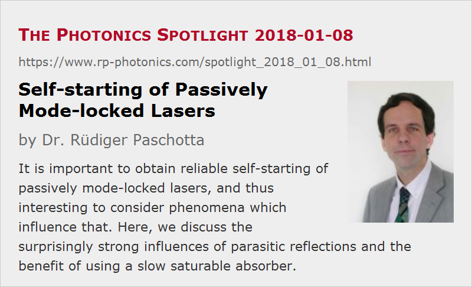

Self-starting of Passively Mode-locked Lasers
Posted on 2018-01-08 as a part of the Photonics Spotlight (available as e-mail newsletter!)
Permanent link: https://www.rp-photonics.com/spotlight_2018_01_08.html
Author: Dr. Rüdiger Paschotta, RP Photonics Consulting GmbH
Abstract: It is important to obtain reliable self-starting of passively mode-locked lasers, and thus interesting to consider phenomena which influence that. Here, we discuss the surprisingly strong influences of parasitic reflections and the benefit of using a slow saturable absorber.

When a laser is passively mode-locked in order to obtain picosecond or femtosecond pulses, it is highly desirable that the mode locking reliably starts when the laser is turned on. In a previous posting in 2008, I explained why that self-starting is more easy to achieve for lasers with relatively short laser resonators, although (or actually because) the peak power enhancement compared with continuous-wave operation is smaller there. Today, I would like to address two other important aspects of ultrafast laser physics.
Parasitic Reflections
Parasitic reflections within the resonator of a passively mode-locked laser can be highly detrimental, particularly concerning the self-starting behavior. For example, even if the surfaces of the laser crystal have nearly perfect anti-reflection coatings, one should normally avoid to have such surfaces perpendicular to the beam path, since otherwise the mode locking would not start. That is well known in principle, but many are not aware how extreme the sensitivity of such lasers to parasitic reflections is.
As a simple example, consider a parasitic reflection of only 0.1% (concerning optical powers) perpendicular to the laser beam in a distance of 1 mm from a highly reflecting resonator end mirror. Together with the end mirror, that reflection can be regarded to form a Gires–Tournois interferometer. One can calculate that depending on the exact spacing, that could contribute a huge group delay dispersion of up to 2.83 ps2 = 2.83 million fs2. That is far more dispersion than one usually has from any other optical components in the resonator. Well, that amount of dispersion is not directly relevant for a femtosecond pulse, which is much shorter than the round-trip time of our parasitic sub-resonator (2 mm / c ≈ 6.7 ps); in other words, the bandwidth of that dispersion is far smaller than the pulse bandwidth, and one needs to consider multiple orders of higher-order dispersion. However, we would certainly have a lot of dispersion acting on a substantially longer pulse, and for a femtosecond pulse we would also have quite serious effects, which however are better explained in a different way: the parasitic sub-resonator would create weak satellite pulses just behind the main pulse, and would coherently add amplitudes to those in every resonator round trip. That could easily destabilize the circulating pulse, thus not only inhibiting the self-starting, but also messing up the mode locking in the steady state.
It is practically impossible to make anti-reflection coatings so good that such effects become negligible. Therefore, the only practical solution is usually to avoid any surfaces perpendicular to the laser beam, except of course the end mirrors of linear resonators. A few degrees of tilting those components against the beam are usually sufficient, but keep in mind that the smaller the beam radius is, the more tilt you need to suppress the reflections, because a more tightly focused beam has a higher beam divergence, i.e., a wider angular range.
In a mode-locked fiber laser, the same aspects holds for any bulk-optical intracavity components; also, you should be aware that low-quality splices, exhibiting reduced levels of return loss, can be a big problem. That is particularly likely for mechanical splices, less for fusion splices.
Slow vs. Fast Saturable Absorbers
Another interesting aspect is that a so-called slow saturable absorber (which by definition has a recovery time longer than the steady-state pulse duration) is beneficial for self-starting mode locking. That is actually not too difficult to understand. Imagine a fast and slow absorber for laser, the parameters of both are adjusted such that in steady-state operation we obtain a reasonable degree of absorber saturation. Now consider what happens if the pulse circulating in the pulse would get longer and longer (for a fixed pulse energy). For the fast absorber, the saturation would immediately get weaker due to the reduced peak power. For the slow absorber, however, that reduction of saturation would only start once the pulse duration gets longer than the (possibly much longer) recovery time of the absorber. If you go further with the pulse duration, up to the duration of random power spikes during the start-up phase of the laser, you will still see stronger saturation effects in the slow absorber, which can thus be more effective in amplifying initial fluctuations to get to the mode-locked regime.
By the way, some might believe that the downside of using a slow absorber is to obtain longer pulses. That is actually not true – essentially, because only the absorber recovery is slower, but not the initial loss saturation caused by the leading part of the pulse: that is always as fast as the pulse, even for a slow absorber. It is only that one might run into problems with instabilities if the absorber is too slow for the wanted pulse duration. More details on those aspects are found in an older posting of 2017 – see the article "Passive mode locking with slow saturable absorbers: surprisingly stable!".
This article is a posting of the Photonics Spotlight, authored by Dr. Rüdiger Paschotta. You may link to this page and cite it, because its location is permanent. See also the RP Photonics Encyclopedia.
Note that you can also receive the articles in the form of a newsletter or with an RSS feed.
Questions and Comments from Users
Here you can submit questions and comments. As far as they get accepted by the author, they will appear above this paragraph together with the author’s answer. The author will decide on acceptance based on certain criteria. Essentially, the issue must be of sufficiently broad interest.
Please do not enter personal data here; we would otherwise delete it soon. (See also our privacy declaration.) If you wish to receive personal feedback or consultancy from the author, please contact him e.g. via e-mail.
By submitting the information, you give your consent to the potential publication of your inputs on our website according to our rules. (If you later retract your consent, we will delete those inputs.) As your inputs are first reviewed by the author, they may be published with some delay.
|  |
If you like this page, please share the link with your friends and colleagues, e.g. via social media:
These sharing buttons are implemented in a privacy-friendly way!